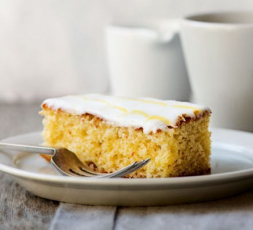

Lemon Drizzle Slices
A classic British cake from the Bake Off judge, Paul Hollywood's lemon
drizzle is a simple traybake, made extra special with feather icing

Ingredients
For the Cake
- 70g softened unsalted butter
- 120g caster sugar
- 2 medium eggs
- 140g self-raising flour
- 1tsp baking powder
- finely grated zest 1lemon
- 1tbsp lemon curd
- 2tbsp full-fat milk
For the drizzle topping
- 30g granulated sugar
- juice 1 leomn
For the feather icing
- 250g icing sugar
- 3bsp water
- splash of yellow food colouring
Method
-
Heat oven to 180C/160C fan/ gas 4. Line a 20 x 20cm square baking tin
with baking parchment.
-
Using an electric whisk, beat the butter and sugar together until
pale, light and fluffy. Add the eggs and mix again. Add the flour,
baking powder, lemon zest, lemon curd and milk, and mix with a wooden
spoon until all the ingredients are thoroughly combined. Pour the
mixture into the prepared tin and bake for 25-30 mins or until a
skewer comes out clean.
-
Mix the sugar and lemon juice together and pour over the hot cake.
Leave to cool in the tin. You can eat the cake as it is, or for a
fancy finish, try making this feather icing.
-
Mix the icing sugar with just enough water to give a runny, but not
watery, icing. Put a small amount of icing in a separate bowl. Add a
few drops of the food colouring to the icing until pale yellow. Spoon
into a disposable icing bag.
-
Remove the cake from the tin and peel off the baking parchment. Sitgit
the cake on a wire rack over a baking tray. Spread the white icing
over the top. Pipe thin lines of the coloured icing across the width
of the cake. Use a cocktail stick to drag through the lines in
opposite directions to create a feathered effect. Leave to set before
cutting into slices.
Recipe from Good Food magazine, July 2016
By Paul Hollywood